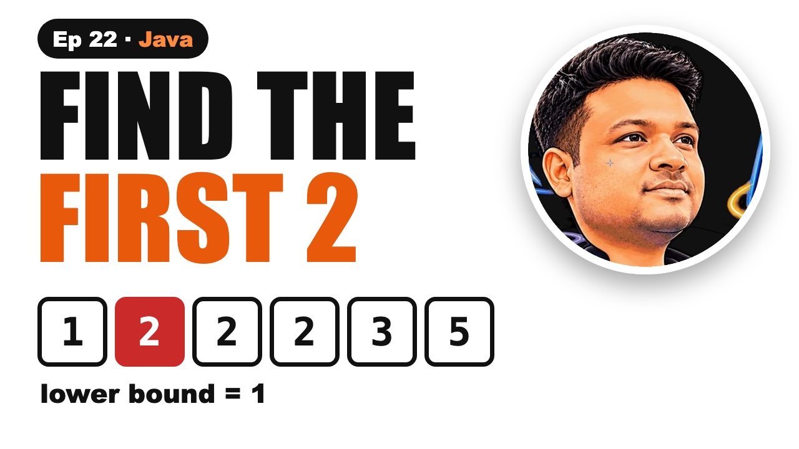

Lower Bound and Upper Bound in Java | Binary Search

The video goes live on 27 Nov 2026 at 6:00 PM IST. The notes are ready now.
?What this episode covers
Plain binary search stops at whichever copy of a number it hits first. Interview questions usually want the first copy, the last copy, or how many there are.
Lower bound is the first index whose value is at least x. Upper bound is the first index whose value is more than x. They differ by one comparison. In 1, 2, 2, 2, 3, 5 the lower bound of 2 is index 1 and the upper bound is index 4, so the twos live from 1 to 3 and there are three of them.
The loop rule that prevents infinite loops: high starts at n, loop while low is less than high, and set high = mid when mid could be the answer. First and last position (LeetCode 34) is two binary searches, and the count is upper bound minus lower bound, all in O(log n).
◎What you'll be able to do
- Lower bound
- Upper bound
- The loop rule
- First and last position
- Count in O(log n)
{ }The Java code from the video
Type it out yourself, or copy it. Each file runs on its own with java FileName.java and prints the examples from the video.
import java.util.*;
// Episode 22: lower bound, upper bound, first and last position. Run: java Bounds.java
public class Bounds {
// first index with a[i] >= x (a.length if none). Also = Search Insert Position (LeetCode 35).
static int lowerBound(int[] a, int x) {
int lo = 0, hi = a.length; // hi = n: the answer can be n
while (lo < hi) { // lo < hi goes with hi = mid
int mid = lo + (hi - lo) / 2;
if (a[mid] < x) lo = mid + 1;
else hi = mid; // mid might be the answer: keep it
}
return lo;
}
// first index with a[i] > x. One character different: <=
static int upperBound(int[] a, int x) {
int lo = 0, hi = a.length;
while (lo < hi) {
int mid = lo + (hi - lo) / 2;
if (a[mid] <= x) lo = mid + 1;
else hi = mid;
}
return lo;
}
// LeetCode 34: first and last position of x
static int[] searchRange(int[] a, int x) {
int first = lowerBound(a, x);
if (first == a.length || a[first] != x) return new int[]{-1, -1};
int last = upperBound(a, x) - 1;
return new int[]{first, last};
}
// how many times x appears, in O(log n)
static int count(int[] a, int x) {
return upperBound(a, x) - lowerBound(a, x);
}
public static void main(String[] args) {
int[] a = {1, 2, 2, 2, 3, 5};
System.out.println("a = " + Arrays.toString(a));
System.out.println("lowerBound(a, 2) = " + lowerBound(a, 2));
System.out.println("upperBound(a, 2) = " + upperBound(a, 2));
System.out.println("lowerBound(a, 4) = " + lowerBound(a, 4) + " (where 4 would go)");
System.out.println("searchRange(a, 2) = " + Arrays.toString(searchRange(a, 2)));
System.out.println("searchRange(a, 4) = " + Arrays.toString(searchRange(a, 4)));
System.out.println("count(a, 2) = " + count(a, 2));
int[] b = {1, 3, 3, 3, 3, 8}; // your turn
System.out.println("b = " + Arrays.toString(b) + ": lb(3)=" + lowerBound(b, 3) + " ub(3)=" + upperBound(b, 3) + " count=" + count(b, 3));
}
}!The mistake to watch for
Mixing low less than or equal to high with high = mid. Once low equals high, nothing changes, and the loop runs forever.
✦Key moments tap one to jump there
↗Full transcript
Read the whole lesson
Your binary search finds a seven, but the interviewer wants the first seven. Almost everyone fails this. Here's why.
Plain binary search stops at whichever seven it hits first. That might be the middle one.
Two tiny changes fix it. They're called lower bound and upper bound, and they solve a whole family of LeetCode problems.
Welcome back to Compiled Canvas. This is Episode Twenty Two of our DSA series. Last time, we learned linear search and binary search.
Here's the plan. First, what lower bound means. Then upper bound. Then the one rule that stops infinite loops. Then first and last position in Java. And counting copies in O of log n. A cheat sheet. And an easy quiz at the end.
Let's go.
Lower bound is the first place where a number could go, without breaking the order. And it's the key to this whole video.
In other words, the first index whose value is greater than or equal to the target.
Array one, two, two, two, three, five. Lower bound of two is index one, the very first two.
Lower bound of four? There's no four. The first value bigger than four is five, at index five. So four would go there.
That's why lower bound also answers Search Insert Position, LeetCode thirty five, for free.
Upper bound is almost the same, with one character changed. And that one character is where most bugs come from.
Upper bound is the first index whose value is strictly greater than the target.
Upper bound of two is index four, the three, just after the last two.
So the twos live from lower bound, up to just before upper bound. Index one to index three.
Now the rule that stops your binary search from looping forever. Get this wrong, and your program never stops.
For lower and upper bound, high starts at n, one past the end. Because the answer can be n, when every number is smaller.
Loop while low is less than high. When the middle is a possible answer, set high to mid, not mid minus one.
Mix them up, with low less than or equal to high and high equals mid, and once low equals high, nothing changes. Infinite loop.
Simple rule. High equals mid always goes with low less than high.
Here's lower bound. High starts at n, and we loop while low is less than high.
If the middle is too small, the answer is to its right. Otherwise mid could be the answer, so keep it.
Upper bound is the same code with less than or equal. That's the one character.
Quick pause, before we go further. If you're finding this video valuable, hit subscribe to Compiled Canvas, and turn on the bell. It's free, it takes one second, and it helps me keep making this complete DSA series for you. Alright, back to it.
Now LeetCode thirty four. Find the first and last position of a number.
First is just lower bound. But check it really holds our number. If not, return minus one, minus one.
Last is upper bound, minus one. Two binary searches, so O of log n.
One more trick, and it's a favourite in interviews. How many times does a number appear?
Upper bound minus lower bound. Four minus one is three. Three twos, without counting them one by one.
On a sorted array of a million numbers, that's about forty checks instead of a million.
Your turn. Pause. Array one, three, three, three, three, eight. What are lower bound and upper bound of three?
Lower bound is one, upper bound is five. So there are four threes.
So, here's the whole thing in one cheat sheet. Pause and screenshot this.
Lower bound: first index with value at least x.
Upper bound: first index with value more than x.
High starts at n.
High equals mid goes with low less than high.
Last position is upper bound minus one.
Count is upper bound minus lower bound.
Okay, quiz time. Three easy questions. Pause the video, think, and then hit play.
Question one. In one, two, two, five, what's the lower bound of two?
Question two. Same array. What's the upper bound of two?
Question three. Low less than or equal to high, with high equals mid. What happens?
Ready?
Question one: Index one.
Question two: Index three.
Question three: It can loop forever.
How many did you get right? Tell me in the comments: three out of three, two, or one.
Let's recap. Lower bound finds the first copy. Upper bound finds just past the last. Use low less than high with high equals mid. First and last are two binary searches. Count with upper minus lower.
Your homework. Solve LeetCode thirty four, First and Last Position, and LeetCode two seventy eight, First Bad Version. Practice problems with hints and Java answers are on compiled canvas dot com. And tell me in the comments: how many fives are in one, five, five, five, nine?
Next episode, binary search on the answer. Koko eating bananas, book allocation and aggressive cows, with one template.
And don't forget to subscribe to Compiled Canvas, so you don't miss anything new in tech and the job market. Keep coding, stay consistent, and I'll see you in the next one.